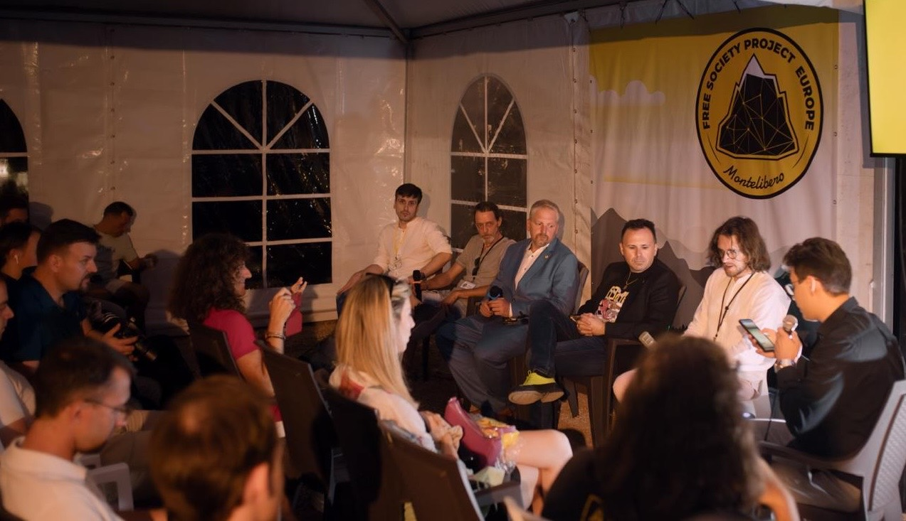
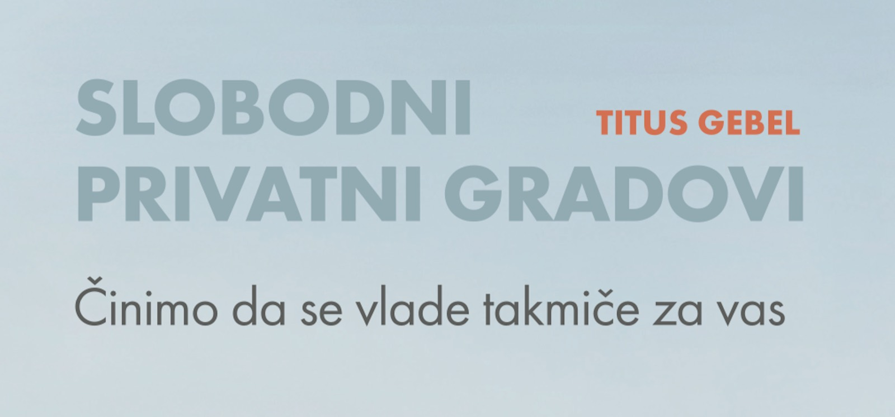

MTL Fest
Podrška organizacionim troškovima i govornicima.
DetaljiPrimamo dobrovoljne donacije i podržavamo projekte povezane s pokretom Montelibero kroz grantove, sponzorstva, donacije i, u dokumentovanim slučajevima, beskamatne zajmove.

Podržati i proširiti inicijative koje koriste pokretu Montelibero kroz dobrovoljne donacije.
Javno su dostupni linkovi ka odlukama Savjeta, novijim evidencijama podrške, pregledu statuta i glavnom multisig računu.
Savjet razmatra prijedloge u odnosu na ciljeve fonda. Administracija ostaje na predlagaču ili koordinatoru projekta, a podrška nije garantovana.
Donatori prenose prihvaćene Stellar aktive na poseban račun za donacije.
Savjet razmatra prijedloge u odnosu na ciljeve fonda i odlučuje da li će ih podržati i na koji način.
Podrška može biti grant, sponzorstvo, donacija, beskamatni zajam ili drugi dokumentovani oblik. Linkovi ka javnim odlukama i izvještajima objavljuju se kada su dostupni.
Fond trenutno prihvata EURMTL, USDM i SATSMTL na mreži Stellar. Automatizovane opcije ispod rade isključivo s EURMTL-om i nastavljaju se na spoljašnjim servisima; ovaj sajt ne obrađuje niti čuva uplatu.
Izaberite iznos u Stellar novčaniku, otvorite Telegram link za 10 EURMTL ili prenesite sredstva direktno na adresu ispod. Provjerite podatke u novčaniku.
Samo EURMTL i samo cijeli iznosi. Slanje iznosa otvara spoljašnji kastodijalni servis MyMTLWalletBot u Telegramu.
Izaberite iznos u novčaniku. Ako se novčanik ne otvori, koristite adresu za donacije.
Samo EURMTL. Slanje iznosa otvara spoljašnji servis za preusmjeravanje, a zatim kompatibilan Stellar novčanik.
Izaberite iznos u novčaniku. Ako se novčanik ne otvori, koristite adresu za donacije.
Za EURMTL, USDM ili SATSMTL koristite Stellar adresu ispod tek nakon provjere mreže, adrese i tačnog izdavaoca aktive.
Transferi su nepovratni i moguće su naknade. Provjerite sve podatke, zatim zadržite pritisak ili koristite Ctrl+C za kopiranje.
Provjerite račun za donacije u blockchain preglednikuOve aktive navedene su u aktuelnom pregledu fonda na ruskom jeziku. Prije prenosa otvorite izvor za odgovarajuću aktivu i provjerite njenog izdavaoca. Drugi oblici donacije zahtijevaju prethodni dogovor sa Savjetom.
GACKTN5DAZGWXRWB2WLM6OPBDHAMT6SJNGLJZPQMEZBUR4JUGBX2UK7VPregled statuta objašnjava kako fond može koristiti donacije i kako se usklađuju namjenske donacije. Povezani pregled je na ruskom jeziku.
Radnje povezane s donacijama otvaraju spoljašnje novčanike, Telegram, servis za preusmjeravanje, blockchain preglednik ili wiki, koji imaju sopstvena pravila privatnosti i bezbjednosti.

Podrška organizacionim troškovima i govornicima.
Detalji
Razvoj karata i otvorenih podataka za grad Bar.
Detalji
Sponzorstvo izdanja knjige „Osnove kriptovaluta” na crnogorskom jeziku.
Detalji
Prevod na crnogorski i štampanje knjige Titusa Gebela „Slobodni privatni gradovi”.
Detalji
Plaćanje ulaznica za festivale Liberty in Our Lifetime 2023. i 2024. godine.
Detalji
Beskamatni zajam za štampanje izdanja knjige o ankapu.
Detalji
Beskamatni zajam za proizvodnju Montelibero promotivnih proizvoda.
Detalji
Podrška putovanju predstavnika na LibertyCon u Tbilisiju.
Detalji
Donacija za troškove hostinga MonteWiki.
Detalji
Sponzorstvo II Liberty Conf, libertarijanske konferencije u Tbilisiju.
Detalji
Donacije za podršku aktivnosti.
DetaljiSvako može predložiti projekat ili ideju, bez obzira na učešće u Monteliberu; prijedlog se može odnositi i na podršku pojedincu.
Prijedlog mora biti u skladu s ciljevima fonda. Ako nijeste sigurni, obratite se botu Savjeta prije pripreme prijedloga.
Preko bota Savjeta opišite ideju, potrebnu podršku i ko će je administrirati ili privatno provjerite uklapa li se u ciljeve fonda.
Pišite botu SavjetaRazgovarajte o istom prijedlogu u javnom Telegram chatu da biste dobili povratne informacije, pronašli zainteresovane i doradili ideju.
Otvorite javni chatPredlagač ili koordinator ostaje odgovoran za administraciju projekta. Podrška i njen oblik zavise od odluke Savjeta i nijesu garantovani.
Privatni bot i javni chat su spoljašnji servisi Telegrama. Poruke u javnom chatu su javne; na oba odredišta primjenjuju se pravila Telegrama.
Fondom upravljaju njegovi najveći aktivni donatori. Savjet ima najviše 10 članova, a glavni račun kontroliše multisig, ne jedna osoba.
Težine u multisigu preračunavaju se na osnovu novijih donacija i delegacija. Za odobravanje transakcija i odluka potreban je kvalifikovani prag, što upravljanje održava kolektivnim i transparentnim.
U blockchain pregledniku provjerite glavni Stellar račun kojim upravlja Savjet i njegovu javnu aktivnost.
Otvorite multisig računOtvorite pregled statuta na ruskom jeziku. On sadrži link ka važećem zvaničnom tekstu i sažima ciljeve fonda, status donatora, kriterijume Savjeta i pravila glasanja.
Kratki odgovori za ljude i AI agente kojima je potrebno da razumiju fond bez nagađanja.
Treći fond Montelibero je fond zajednice koji kroz dobrovoljne donacije podržava korisne inicijative povezane s pokretom Montelibero u više dokumentovanih oblika.
Nije. Donacije TFM-u su dobrovoljni doprinosi. To nijesu investicije, hartije od vrijednosti, udjeli, zajmovi, proizvodi s prinosom niti instrumenti s garantovanim povratom.
Dvije automatizovane opcije rade samo s EURMTL-om i nastavljaju se na spoljašnjim servisima; sajt ne obrađuje niti čuva uplatu. Za direktne transfere mogu se koristiti trenutno prihvaćene Stellar aktive. Pošto su transferi nepovratni i moguće su naknade, uvijek provjerite mrežu, adresu za donacije i tačnog izdavaoca aktive u aktuelnom javnom izvoru.
Svako može kontaktirati Savjet preko bota ili razgovarati o ideji u javnom Telegram chatu. Predlagač ili koordinator administrira projekat. Fond može izabrati različite dokumentovane oblike podrške, ali odobrenje nije garantovano.
Sajt vodi ka javnoj evidenciji na MonteWiki, referencama novije podrške, pregledu statuta i glavnom multisig računu kao javnoj referenci za upravljanje. Većina tekstualnih izvora trenutno je dostupna samo na ruskom jeziku.
Ispod je izbor novijih javnih odluka o podršci. Dostupni dokazni linkovi trenutno vode ka javnim izvorima na ruskom jeziku.